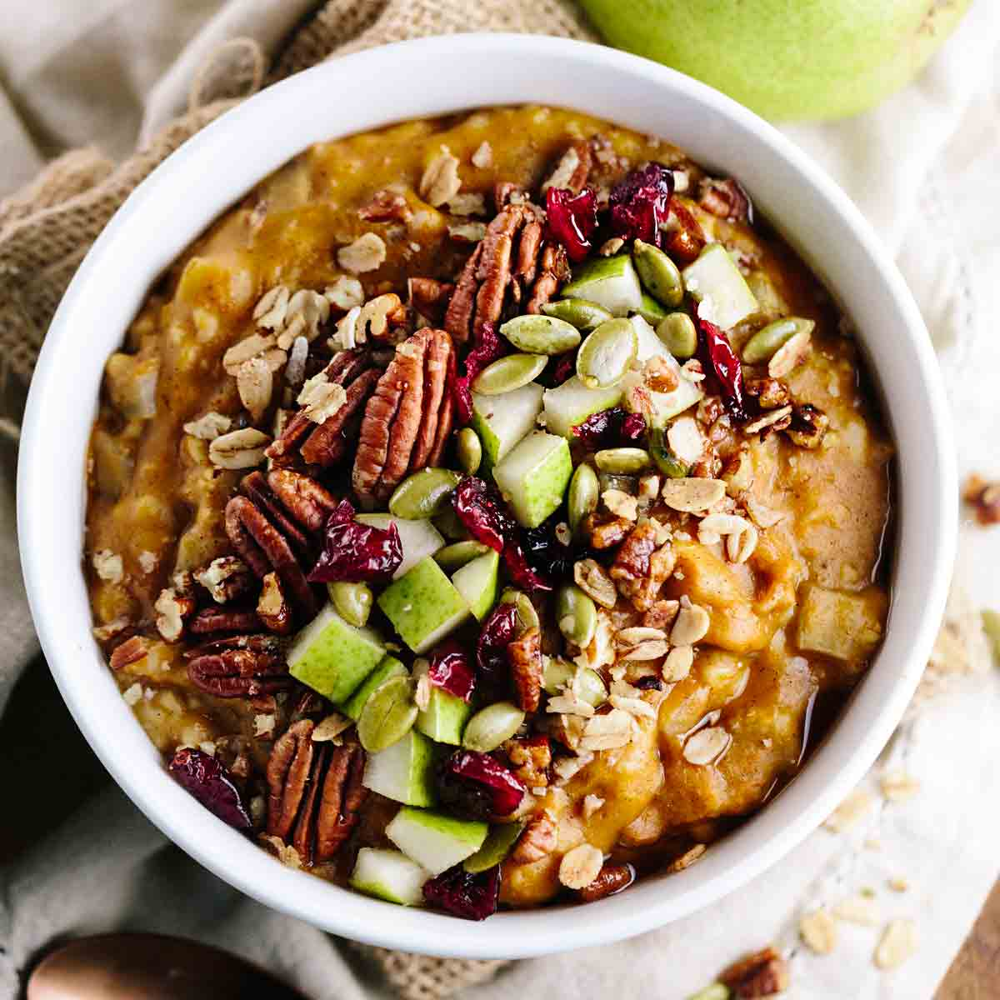
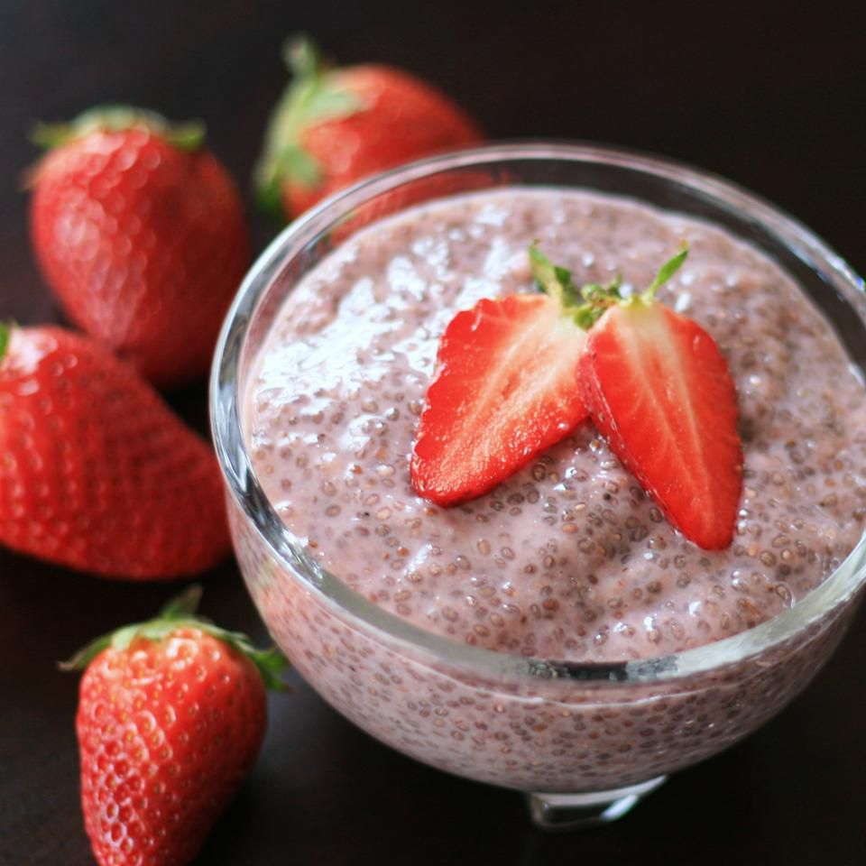
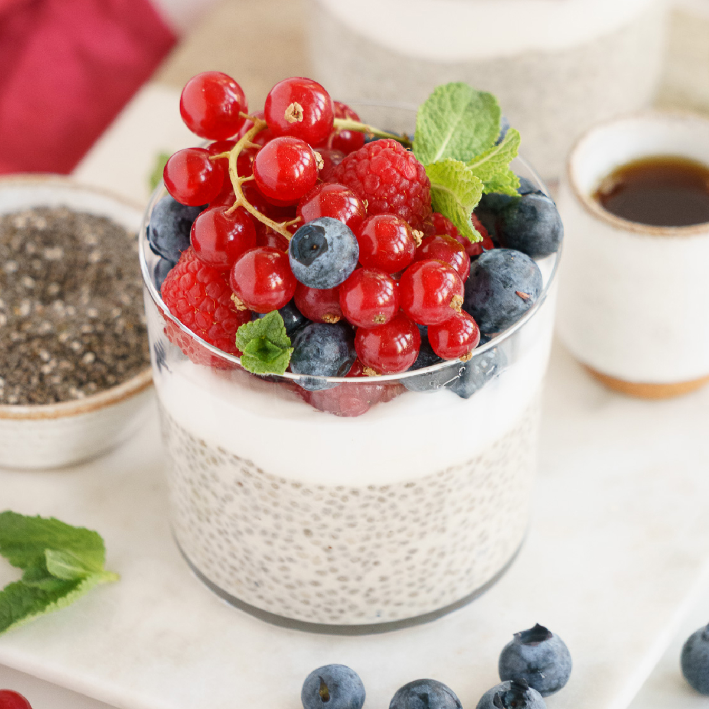
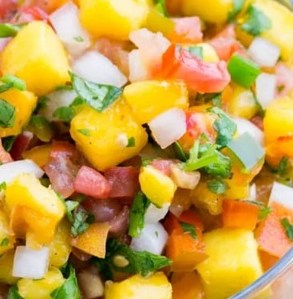
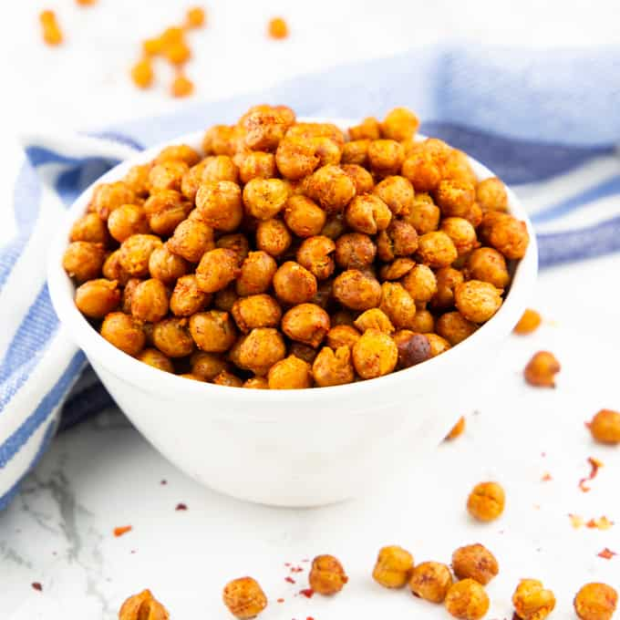
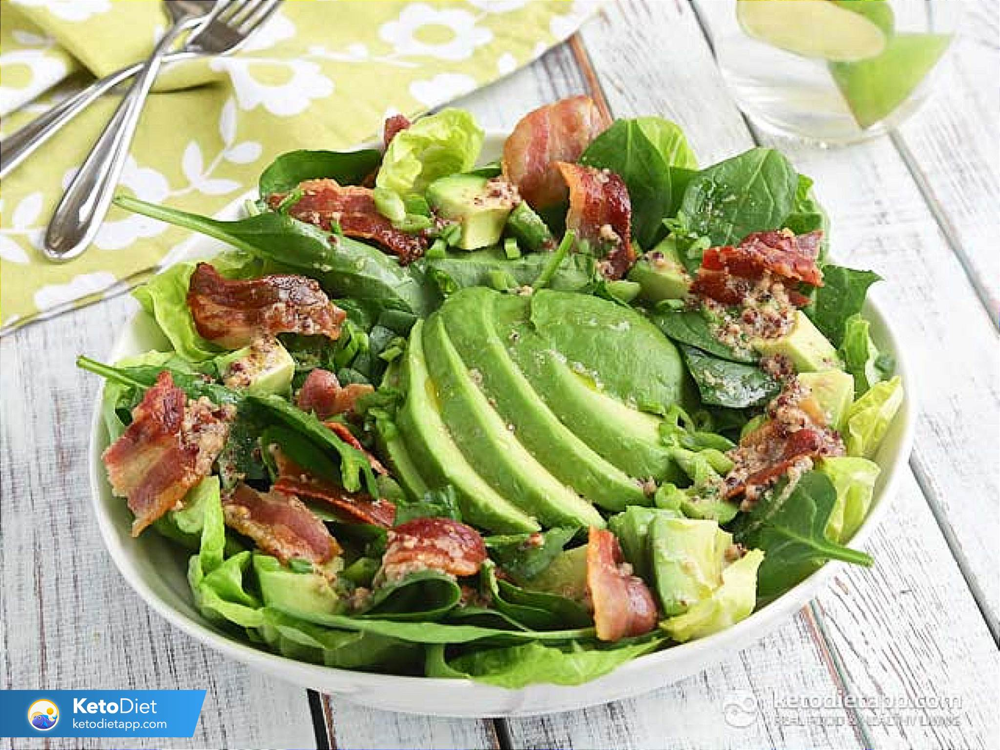

Breakfast
Veggie mix Omelette
A veggie omelet makes a filling and nourishing meal, whether its for breakfast, lunch or dinner. Eggs and veggies complement one another through the nutrients they provide.
View Recipe

Nutella Banana and Berry Toast
This classic peanut butter toast is a little piece of heaven. This healthy toast idea will make you feel full and satisfied because while being tasty it is also high in protein, fat and fiber.
View Recipe

Yogurt Fruit Salad
Combining the intake of yogurt and fruit could provide probiotics, prebiotics, high-quality protein, important fatty acids, and a mixture of vitamins and minerals that have the potential to exert synergistic effects on health.
View Recipe

Pumpkin Oatmeal
The health benefits of pumpkin include vitamins, antioxidants, fiber, folates, and more! Oatmeal is high in fiber and whole grains. This pumpkin oatmeal is poised to keep you full and nourished.
View Recipe
Desserts

Strawberry Chia Pudding
Strawberry Chia Seed Pudding is a healthy, low sugar breakfast or snack that you can prep ahead of time.
Recipe

Trail Mix Cookies
These trail mix cookies are soft, chewy oatmeal cookies loaded with salty-sweet, nutty-fruity, chocolaty goodies.
Recipe

Sweet Potato Cake
Sweet potato cake is an easy and healthy bundt cake you would love to bake for your family and friends.
Recipe

Vanilla Chia Pudding
Healthy enough, loaded with omegas and protein to eat any time of the day, but also enjoyable as a sweet treat!
Recipe
Snacks

Peach Salsa
Peach Cucumber Recipe is the perfect snack. Low calorie, paleo and gluten free it is so delicious!
Recipe
Veggie Nachos
Healthier way to enjoy nachos! They're low in fat and packed with healthy veggies and filling!
Recipe

Crispy Chickpeas
Crispy roasted chickpeas have protein, fiber and healthy carbs making them totally good for you!
Recipe

Lentil Salsa
This easy, tasty salsa gets an added protein boost from heart-healthy lentils.
Recipe
Salads

Quinoa Salad
Higher in protein than other grain, quinoa is so nutritious that NASA used to feed it to astronauts on space missions
Recipe

Avocado Salad
This Avocado Salad packed with nutrition is filling but still light and perfect for lunch or as a side dish for dinner.
Recipe

Cobb Salad
This Cobb salad is true to the original with all the good stuff--chicken, eggs, bacon, avocado and a tangy dressing.
Recipe

Egg and Avocado Salad
Avocado is a delicious & nutritious addition to egg salad. Thanks to its creamy texture, can be enjoyed without mayo!
Recipe